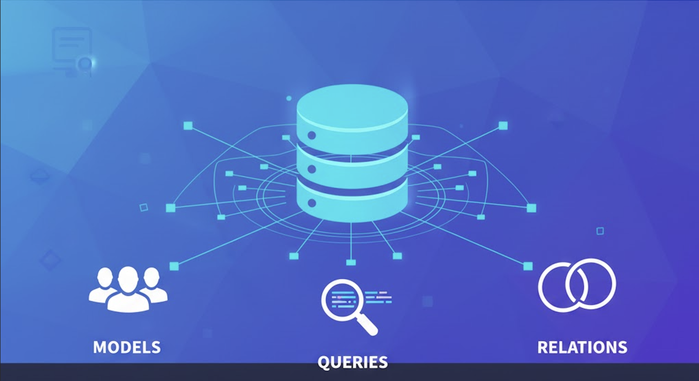
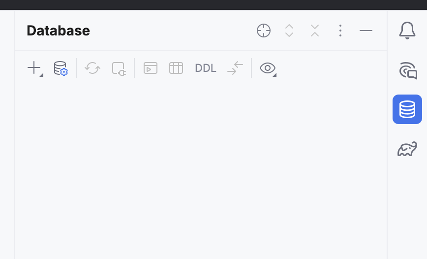
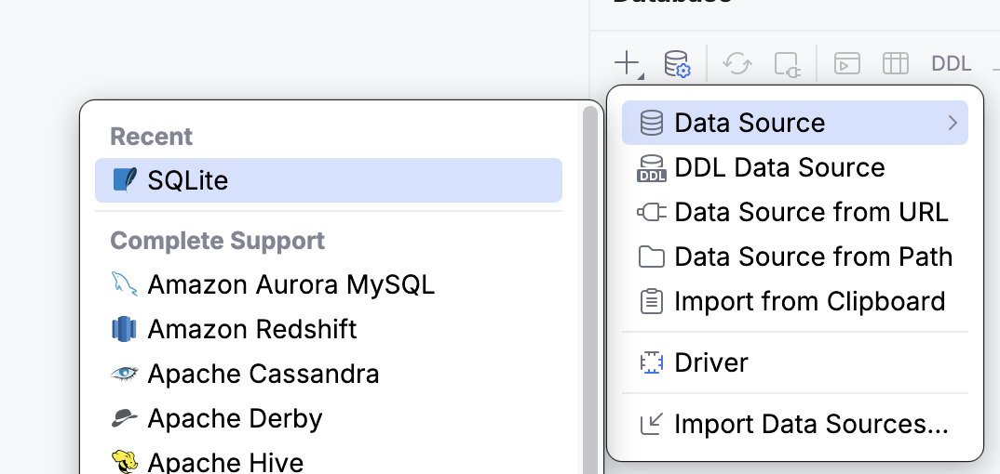
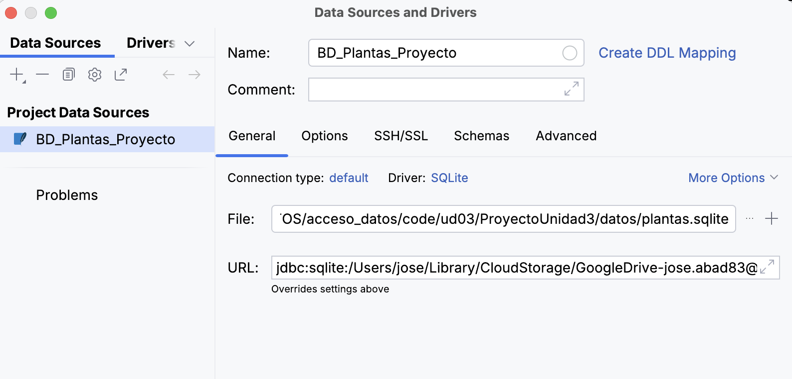
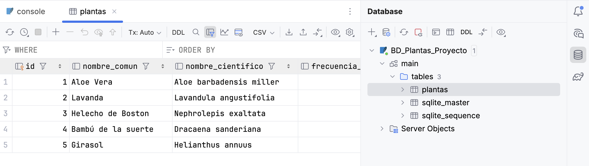

UD3 - Persistencia en Bases de Datos Relacionales

Guía de Uso
Estos apuntes están diseñados para un aprendizaje práctico. A lo largo de la unidad se aplicarán los conceptos teóricos para construir, paso a paso, una aplicación completa de gestión de datos. La temática de la aplicación es de libre elección, pero la estructura y los pasos a seguir serán comunes.
Intercaladas con la teoría y los ejemplos, se utilizarán las siguientes cajas de contenido:
- 🔍 Ejecutar y Analizar: Contienen fragmentos de código que deben ser ejecutados y comprendidos en detalle. El objetivo es observar su funcionamiento y salida.
- 🎯 Práctica para Aplicar: Indican la necesidad de programar y aplicar los conceptos aprendidos para avanzar en el desarrollo del proyecto personal.
- 📁 Entrega: Marcan los puntos de entrega del trabajo, que serán revisados y calificados por el profesor.
Fundamentos de las Bases de Datos Relacionaes
En esta primera sección, sentaremos las bases teóricas sobre las bases de datos relacionales y prepararemos el entorno de trabajo inicial para nuestro proyecto.
Introducción a las Bases de Datos Relacionales
Las bases de datos relacionales son esenciales en el desarrollo de aplicaciones modernas. Su integración con una aplicación requiere realizar una conexión al sistema gestor de base de datos (SGBD) desde el lenguaje de programación.
Este tema se centra en cómo realizar esa conexión, cómo trabajar con datos mediante sentencias SQL y cómo aplicar buenas prácticas, como el cierre de recursos, el uso de transacciones y procedimientos almacenados.
Una base de datos relacional es un sistema de almacenamiento de información que organiza los datos en tablas. Cada tabla representa una entidad (por ejemplo, clientes, productos, facturas) y está compuestas por filas y columnas, donde cada fila representa un registro único y cada columna contiene un atributo específico de ese registro.
Ejemplo de tabla clientes:
| id_cliente | nombre | ciudad |
|---|---|---|
| 1 | Pol | Castellón |
| 2 | Eli | Valencia |
La integridad y las relaciones entre tablas se gestionan mediante claves:
- Clave Primaria (Primary Key, PK): Una o más columnas que identifican de forma única cada registro de una tabla.
- Clave Foránea (Foreign Key, FK): Una columna que referencia la clave primaria de otra tabla, estableciendo así una relación entre ambas.
Ejemplo de tabla facturas:
| id_factura | id_cliente | fecha |
|---|---|---|
| 1 | 1 | 2025-09-18 |
| 2 | 1 | 2025-09-18 |
La interacción con estas bases de datos se realiza a través del lenguaje SQL (Structured Query Language), que permite ejecutar las operaciones CRUD:
- Create (Crear):
INSERT. - Read (Leer):
SELECT. - Update (Actualizar):
UPDATE. - Delete (Borrar):
DELETE.
Un ejemplo sencillo de consulta podría ser:
Las bases de datos relacionales constituyen un pilar fundamental en el desarrollo de software. Organizan la información en tablas, compuestas por filas (registros) y columnas (atributos). Cada tabla representa una entidad (p. ej., Clientes, Productos).
Tipos de Gestores de Bases de Datos (SGBD)
Para conectar una aplicación a una base de datos, es esencial conocer el tipo de SGBD, ya que cada uno requiere un conector (driver) específico.
-
Gestores Embebidos (SQLite, H2, Derby):
- Bases de datos ligeras almacenadas en un único fichero local. No requieren un servicio de servidor independiente.
- Ideales para aplicaciones de escritorio, móviles, prototipos o pruebas.
-
Gestores Cliente-Servidor (PostgreSQL, MySQL, Oracle):
- Sistemas robustos que se ejecutan como un servicio en un servidor, permitiendo múltiples conexiones concurrentes.
- Son el estándar en entornos empresariales y aplicaciones web por su escalabilidad y seguridad.
Preparación del Entorno
En este proyecto se comenzará usando un Gestor Embebido de Bases de Datos, en concreto SQLite, por su simplicidad. Antes de comenzar, debes seguir las instrucciones de Integración de SQLite en IntelliJ.
Introducción
Para facilitar el desarrollo y la depuración de nuestra aplicación, es muy útil poder ver y manipular la base de datos directamente desde nuestro entorno de desarrollo (IDE). IntelliJ IDEA incluye una potente herramienta que nos permite conectar con nuestro fichero plantas.sqlite, ver sus tablas, ejecutar consultas SQL y mucho más, sin tener que salir del editor de código.
Esta guía te mostrará cómo configurar esta conexión paso a paso.
Requisitos:
- Tener tu proyecto de Kotlin abierto en IntelliJ IDEA.
- Haber creado el fichero
.sqlite(ej:plantas.sqlite) y tenerlo ubicado dentro de la carpetadatosde tu proyecto.
Descarga tu base de datos:
- Para trabajar en esta unidad, primero debes descargar el fichero plantas.sqlite
NOTA IMPORTANTE: Para hacer uso de esta funcionalidad de IntelliJ, tienes que tener activada la versión Ultimate de IntelliJ.
Como estudiante, puedes activarla gratis. Para ello date de alta y sigue la guía desde este enlace.
Paso 1: Abrir la Herramienta de Base de Datos
En el lateral derecho de la ventana de IntelliJ, busca y haz clic en la pestaña vertical Database. Si no la encuentras, puedes abrirla desde el menú superior: View > Tool Windows > Database.

Paso 2: Añadir una Nueva Conexión (Data Source)
Dentro de la ventana "Database", haz clic en el icono del signo más (+) y en el menú desplegable selecciona Data Source > SQLite.

Paso 3: Configurar la Conexión al Fichero
Se abrirá una ventana de configuración llamada "Data Sources and Drivers". Aquí debemos indicar a IntelliJ dónde se encuentra nuestro fichero de base de datos.
- Nombre (Name): Asígnale un nombre descriptivo a tu conexión, por ejemplo:
BD_Plantas_Proyecto. - Fichero (File): Este es el paso clave. Haz clic en el botón con los tres puntos (
...) para abrir el explorador de archivos. Navega hasta la carpeta raíz de tu proyecto, entra en el directoriodatosy selecciona tu fichero (plantas.sqlite). - Descargar Drivers: Si es la primera vez que usas esta función, IntelliJ te notificará que faltan los drivers necesarios para comunicarse con SQLite. Verás un texto de advertencia con un enlace azul:
Download missing driver files. Haz clic en él. IntelliJ los descargará e instalará automáticamente en segundo plano.
La ventana de configuración debería tener un aspecto similar a este:

Paso 4: Probar la Conexión y Finalizar
Antes de guardar, es fundamental verificar que la configuración es correcta.
- Haz clic en el botón Test Connection en la parte inferior de la ventana.
- Si todo está bien configurado, verás un mensaje de éxito con un tick verde:
Succeeded. - Una vez confirmada la conexión, haz clic en Apply y luego en OK para cerrar la ventana.
Paso 5: Explora tu Base de Datos
Ya has conectado tu base de datos al IDE. En la pestaña "Database" ahora verás tu nueva conexión. Si la despliegas (>):
- Podrás ver los esquemas de la base de datos (en SQLite, normalmente solo
main). - Dentro del esquema, encontrarás tu tabla
plantas(o la que hayas creado). - Si despliegas la tabla, verás todas sus columnas con sus tipos de datos.
Si haces doble clic sobre el nombre de la tabla (plantas), se abrirá un visor de datos interactivo. Desde aquí podrás ver los registros, ordenarlos, e incluso añadir, modificar o eliminar filas directamente como si fuera una hoja de cálculo.

¿Qué más puedes hacer ahora?
- Ejecutar Consultas SQL: Haz clic derecho sobre el nombre de tu conexión y selecciona
New > Query Console. Se abrirá un editor donde podrás escribir y lanzar sentencias SQL (SELECT,INSERT, etc.) y ver los resultados al instante. - Visualizar el Esquema: Haz clic derecho sobre tu tabla y selecciona
Diagrams > Show Visualization...para ver un diagrama entidad-relación de tu base de datos.
Esta integración es una herramienta muy potente para comprobar en tiempo real que las operaciones de tu DAO en Kotlin están funcionando como esperas.
🎯 Práctica 1. Creación del Proyecto y la Base de Datos
- Crea un nuevo proyecto en Kotlin con Gradle.
- A partir de la información anterior, utiliza la herramienta de SQLite en IntelliJ para crear un fichero
nombre_de_tu_BD.sqlite. - Siguiendo con los datos definidos en la Unidad Anterior crea una tabla en tu nueva Base de Datos. Se debe definir con una clave primaria y los tipos de datos adecuados para cada columna.
- Recuerda crear una carpeta
datosen la raíz de tu proyecto y almacenar en ella el archivo.sqlite. - Realiza distintas operaciones
CRUDsobre la Base de DatosSELECT, INSERT, UPDATE y DELETEsobre la tabla definida para probar su funcionamiento. Puedes usar la misma herramienta de IntelliJ.